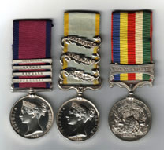
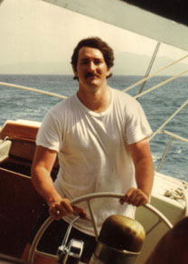
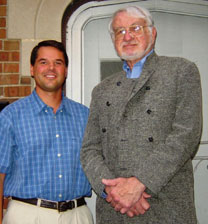
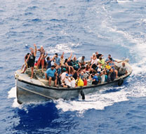

BOOK LINKS:


LINKS TO
MAIN WEBSITE:



British Medals of the Napoleonic War, Crimean War, and China Opium War.

Lew sailing the Reve in the Grenadines in 1975.
Logo of the University of Wales at Bangor, where Lew took his Junior Year Abroad.

Meeting between John Clouse (right) and Charles Veley (left), the two contenders for the title of “Most Traveled Man”
Papa Doc Duvalier, President for Life of Haiti. Note the Colt .45 in the lower right.

The entire population of Pitcairn Island waves to the M.V. Discovery from their longboat.
|
Contents
Section 1 The Most Traveled Man on Earth
The Most Traveled Man on Earth
He’s been to all 300+ countries and sovereign territories on earth; he’s the Golden God of Travel. I’ll catch him yet................2
The Best and Worst of the World, from the Most Traveled Man
Ever asked these questions: What is the best restaurant on earth? Best hotel? Best beer? Best country? Here are the answers................9
The Other Most Traveled Man on Earth
This new guy hit 317 “countries” in just four years of traveling. More competition!................11
And the Winner Is…
Guinness definitively says this individual is the most traveled................17

Section 2 A Kid in Paradise
Papa Doc and His Colt .45 vs. My Papa
My father meets Dictator-for-Life Papa Doc of Haiti and almost gets shot by him for advocating good government. I decide to save the poor people of the world from corruption and poverty................20
Swimming in Green Goo, the Mother of All Mudholes, and the Citadel of Haiti
At age eight I ride a horse up a mountain to the Citadel in Haiti and get stuck in a mudhole in the Haitian jungle................25
Daddy, Daddy, There’s a Kamoy in My House!
When I am twelve, a burglar sneaks into my own little house in Thailand, wakes me up, and steals my stuff. I reconsider my decision to save the poor................31
Jubilee! Where the Seafood Jumps onto Your Plate
Summertime, and the livin’ is easy, fish are jumpin’—right into your lap................34
The College Chapel and the Golden Calf
A college chum climbs to the top of the chapel and ties an eighty-pound Golden Calf to the spire. We all bow down and worship................38
An American Named Llewellyn, Ya!
A year in Wales shows me that Llewellyn is no “girl’s name.”................41
Llewellyn, Duke of Abyssinia:
A Prince of Ethiopia offers to make me a Duke................46
Section 3 Hollywood vs. History
Sailing a Tall Ship Across the South Pacific in Search of the Real “Bali Ha’i”
Michener’s real island paradise from Tales of the South Pacific: home of downed World War II fighter planes, pig killing and cargo cults, cannibals and volcanoes................53
Out of Africa: History vs. Hollywood
A trip to the home of Isak Dinesen in Kenya reveals that Robert Redford needs a history lesson................74
“Oh Dear” The Strange Life of HMS Bounty Descendants on Pitcairn Island
After the end of the movie, everyone lived happily ever after, right? Nope. The mutinies had just begun................77
Paradise Lost: Sex Verdicts Wrack Lonely Pitcairn
Paradise or hell on earth—you decide.................85
The Real Story of the Bridge on the River Kwai
The famous World War II bridge in Thailand, and what really happened on the Railway of Death................90
Section 4 Boats, Ships, and the Sea
Sailing to Robinson Crusoe Island: “The Most Romantic Island of All”?
Richard Henry Dana called this island the most romantic island on the planet—who am I to argue?................94
Life of a Lady Leg-rower
Leg-rowing in Burma—done nowhere else; twice as fast as paddling. Floating islands, planted with tomatoes, that sink if it rains too much.................100
Bill Pinkney: The Amistad Captain’s Incredible Journey
Captain Pinkney was the first black American to circumnavigate the world solo under sail via Cape Horn. Now he is the captain of the re-created Amistad. This is his story................106
Amistad: Four Days Before the Mast
Cruising the Gulf of Mexico aboard the slave ship Amistad is like sailing through a washing machine: half the crew is seasick, and one is vomiting blood. The Chief Mate risks his life to lower the gaff in a storm................111
Bar Crawling with the Schoonermen
A bar crawl through Old Mobile with the Amistad crew involves drawing on the ceiling, wrestling on the floor, and a passionate ninety-minute frozen clinch................117
A Perfect Day Sailing Aboard Jeanie Johnston
The original of this Irish emigrant sailing ship crossed the Atlantic 16 times and never lost a passenger—an incredible record................122
Cruising Up the Shannon Through the Forty Shades O’Green
Taking a self-drive motorboat for a week up one of the lovliest, most historic rivers on the planet................127
Fire When Ready Aboard Olympia
The unknown ship that made the United States into a world power................134
USS Intrepid: Home Is the Sailor, Home from the Sea
Story of the famous World War II carrier, now moored off Manhattan in the Hudson River................137
Sailing Through Five Thousand Years of History
Steaming backwards through the mud, up the Nile. Nefertari, Queen of Egypt, 3,200 years old and looking fresh as a daisy................141
Lock onto One of the World’s Seven Wonders
Transiting the Panama Canal during an international crisis................152
Sri Lanka to Kenya: Indian Ocean Odyssey
Sri Lanka to Mombasa. Lions mating every twenty minutes for ten days— whew!................156
A Cruise from Petra to the Topkapi Dagger
How the world’s biggest party wrecked the finances of the Suez Canal. Making plans to steal the famous Topkapi Dagger. The staff of Moses—found.................164
Fifty-seven Voyages in Five Years
World’s most loyal cruise line customer? Eleven months a year on the same vessel.................177
Captain Erik Bjurstedt: Giant of the Cruise Industry
This captain towers over the industry, in size, stature, and experience.................183
QE2: Royal Treatment at a Pauper’s Price
A fast Atlantic crossing on the grandest lady of them all................188
QM2 = WOW!
The Queen Mary 2 is the largest, tallest, widest, and most expensive cruise ship on earth................194
Dew from Heaven
Is this a stewardess or an angel?................199
Section 5 Clients and Other Disasters
Bustin’ the Gamblin’ at the Sunrise Bar and Pool Hall
In my first job I am forced to join a police raid on an infamous bar in South Miami. Big mistake.................205
The Wedding Cake and the Sliding Snake
Two weddings and a rattlesnake................209
Weekend Getaway: East Timor
I am the first tourist into destroyed East Timor.................214
Ballerina, Spy, First Lady: The Story of Kirsty Sword Gusmão
Profile of the new First Lady of the newest country on earth—Timor Leste................221
Seeing Guam the Hard Way: Twenty-Eight Years in a Hole
A Japanese sergeant fights World War II until 1972, just miles from Japanese tourists sunning themselves on Guam’s beaches.................226
The Most Annoying Country on Earth: I “AS NO VISSA”
Beautiful Bangladesh refuses to let me into their marvy country, and I get to sleep on the floor of the Dhaka airport. Yippee.................233
World’s Worst Traffic Jam?
Fourteen hours stuck in the middle of India—only bribery can clear the mess.................237
Uncle KGB Wants Me
A KGB officer tries to recruit me with an offer of “free trips to nice Caribbean islands.” Hmmmm.................240
Gypped in Gypped: Horsewhipping and Bumping Stomachs
The Minister of Communications horsewhips his male secretary in a formal meeting with American dignitaries. Bumping stomachs at the phone company.................243
The Scrumptious Flying Cows
Who says you can’t feed the world’s poor? Just fly in some steaks…................249
Disasters: History, Impacts and Myths
Think that the Feds will rescue you in a major disaster? That crime rates will go up? That fast disaster relief is always good? Wrong, wrong and wrong.................251
Section 6 Adventures in Genealogy
The Greatest Hobby on Earth
I catch the genealogy bug and push our family tree back to 448 AD.................264
The Search for Brian Boru, High King of All Ireland
I track down my 29th great-grandfather, called the greatest Irishman of all time.................271
Crimes Against Genealogy
Who committed the worst offenses against genealogy? General Sherman by burning southern courthouses during the Civil War? Julius Caesar? Chairman Mao? The IRA? Prepare to be surprised.................282
Section 7 The Great Race: Classic Cars Rally Across America
Vroom! Vroom! The Great Race is Coming
This is the oldest, richest, most exciting and most precise classic car rally in the world—and you doubtless never heard of it.................301
1968 “Bullitt” Mustang: The Essence of Cool
Surveys in the US and UK show that this car, chase and movie are the most memorable in film history.................305
Let’s Go Great Racing—Part 1
Great Race competitors can shatter their shoulders, blow up their engines, or drop their drivetrains—they’ll still keep on going.................311
Let’s Go Great Racing—Part 2
The winners of the Great Race are punctual to within 7 seconds per day for 15 days. In the Bullitt Mustang we don’t do quite so well.................316
The Daring Darrin Duo and Their Delectable Kaiser Darrin
A 1950s fiberglass sports car with sliding doors? Impossible? Think again.................324
The 12-Year-Old Genius Great Racer
This kid starting racing in diapers, and now he scares the pants off his competitors.................329
Total Focus for Fourteen Days Straight
Show me the money! says this fierce competitor with his 94-year-old racing machine.................335
Hail to the Chief: The Studebaker President
From the bottom of a riverbed to a cross-country beauty—this car and its team are pure miracles.................340
Band of Teenagers Rally a Ford Four Times Their Age
Who says the younger generation is a mess? These youngsters took hundreds of bits and pieces, created a fully restored car, and are rallying it 4000 miles to earn college tuition.................344
Section 8 Pink Belly
Revealed: Beauty Secrets of Exotic Thailand
Lose fifty pounds through massage and creams? Unbelievable? Not in Bangkok!................349
The World’s Pinkest Pink Belly
Wanna lose weight? Slap your belly twenty thousand times.................355
Section 9 This Sceptred Isle
A Cozy Castle in Cornwall
Rent a three-story castle fifteen feet wide on the Bristol Channel in King Arthur country? No problem.................360
Sailing with the Royals
Chartering at Cowes Week off the Royal Yacht Squadron clubhouse—a castle built by Henry VIII. Church service with Prince Phillip. 364
Clouds of Glory
Finding and collecting the great medals of Britain................368
Section 10 It’s A Wild Wide World
Running with the Bulls: The Inner Game
Only two hundred people know what is really going on at Pamplona.................381
The Great Vietnamese Dwarf Hunt
A troupe of Vietnamese dwarfs conquers all through hard work and rock ’n’ roll.................387
Mongkut: The King of Fruits You Never Heard Of
Japanese millionaire businessmen go to Thailand for mongkut, golf, and sex, in that order.................390
Knights Templar: Royal Tour with a Noble Purpose
I become a Knight Templar and hobnob with royals.................394
Section 11 Six Countries in Six Hours
Swimming from Andorra to Zimbabwe
Swimming pools of the world, unite!................401
Classic Car Rally Around the World
Around the world in eighty days in Rollers, Bentleys, Packards, Jaguars, and other classics. The greatest rally ever held, and no one heard about it.................403
Breaking the Hundred-Country Barrier: If It’s Two O’Clock, This Must Be Sharjah
I visit six countries no one knows in six hours and gain (and lose) the Holy Grail of Travel: The 100 Countries Award.................411
Appendix: The International Travel News, Travelers’ Century Club, and Charles Veley Lists of Countries
Various lists of “countries” on earth, so you can count up your score.................421
Credits
Credits for photos and previously printed stories.................438
|
|